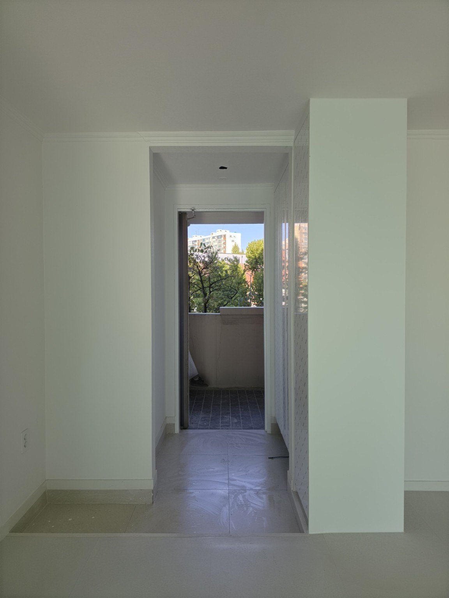
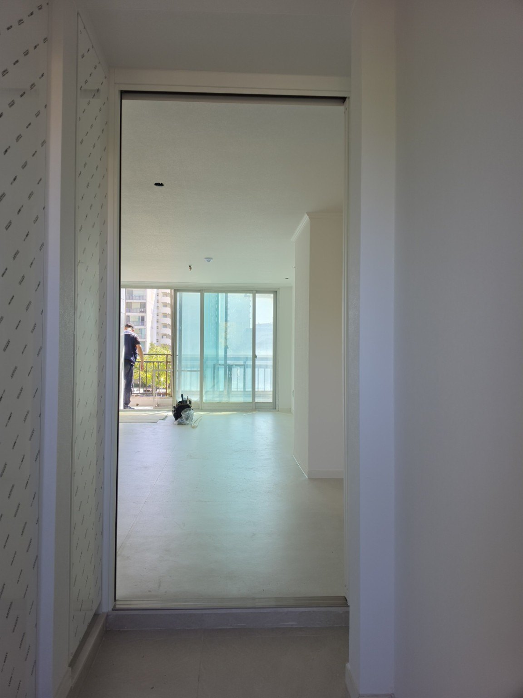
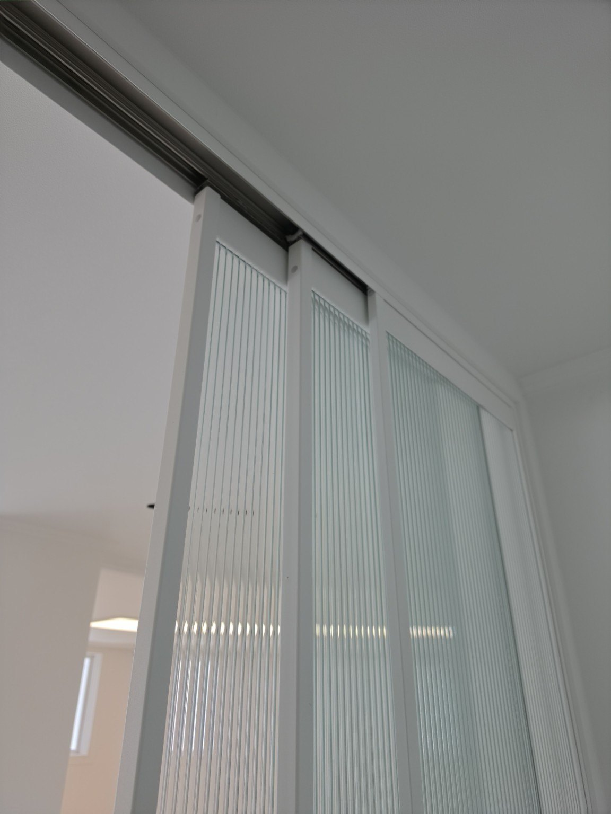
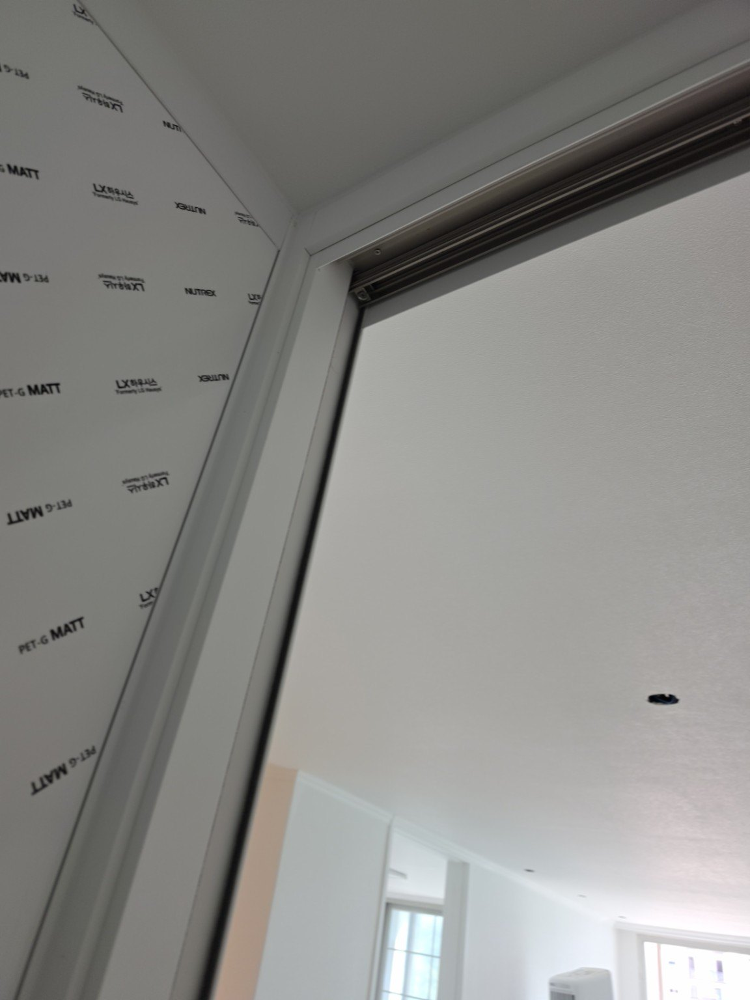
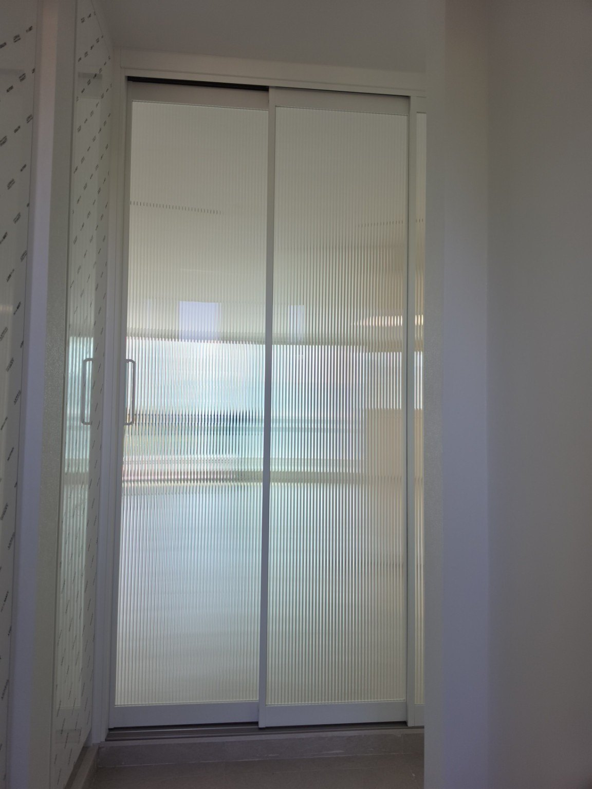
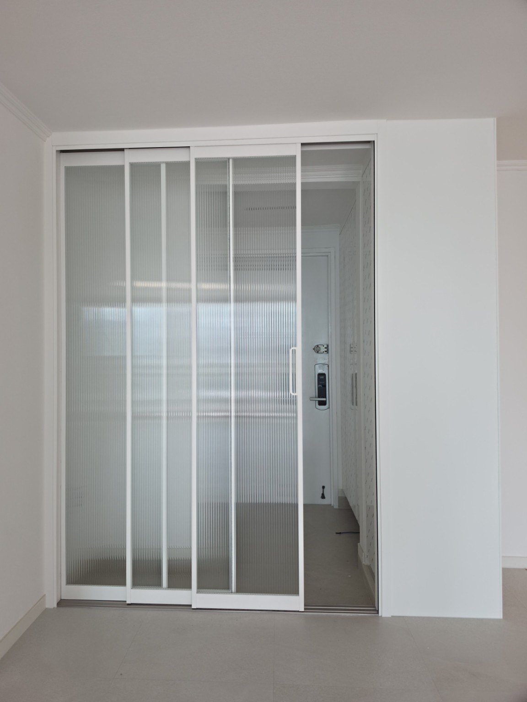
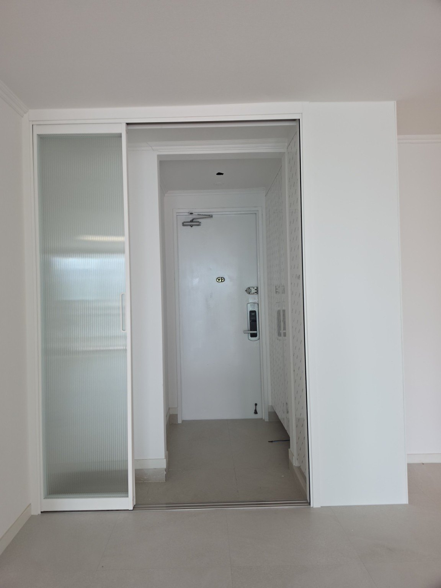
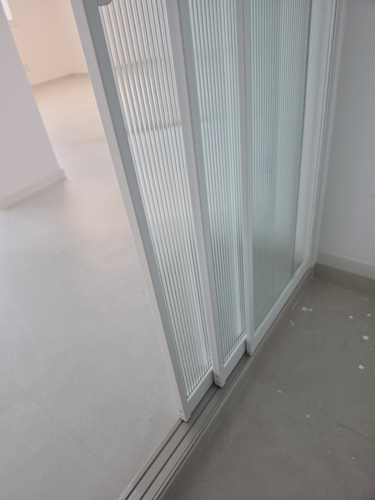

압구정 현대8차 91동
신제품 85mm 3연동 현관중문 시공
현관 입구 오른쪽 신발장 쪽에 가벽을 새로 만들어 중문이 안정적으로 자리 잡을 수 있도록 공간을 구성한 뒤, 신제품 85mm 3연동 중문을 맞춤 시공했습니다. 유리는 세로 패턴이 선명한 모루 세로결 유리를 적용했습니다.
시공 정보
현장 : 압구정 현대8차 91동
중문 : 신제품 85mm 3연동
유리 : 모루 세로결 유리
현장 작업 : 오른쪽 신발장 쪽 가벽 제작 후 시공
현장 : 압구정 현대8차 91동
중문 : 신제품 85mm 3연동
유리 : 모루 세로결 유리
현장 작업 : 오른쪽 신발장 쪽 가벽 제작 후 시공
현장에 맞춘 가벽 제작과 3연동 중문
시공 전에는 현관과 실내 사이가 열린 구조였습니다. 오른쪽 신발장 쪽에 가벽을 만들어 중문 설치 면을 확보하고, 화이트 계열의 85mm 3연동 중문을 설치해 현관과 실내 공간을 깔끔하게 분리했습니다.
3연동 문짝은 여러 장이 연동되어 움직이기 때문에 닫았을 때는 현관 공간을 분리하고, 열었을 때는 출입 공간을 넓게 활용할 수 있습니다. 모루 세로결 유리는 빛은 받아들이면서 시선을 부드럽게 가려주는 디자인 요소로 활용했습니다.









압구정 현대8차 현관중문 시공 Q&A
Q. 신발장 때문에 중문 설치 공간이 애매하면 시공할 수 있나요?
현장 구조에 따라 가벽을 새로 구성해 중문 설치 면을 확보하는 방식으로 시공할 수 있습니다. 이번 현장도 오른쪽 신발장 쪽에 가벽을 만든 뒤 설치했습니다.
Q. 이번 현장에는 어떤 유리를 사용했나요?
세로 방향의 패턴이 들어간 모루 세로결 유리를 적용했습니다. 현관과 실내 사이의 시선을 부드럽게 가리면서 빛을 받아들일 수 있습니다.
Q. 문다라는 현장에 맞춰 제작하나요?
문다라는 2003년부터 현관중문을 직접 제작·시공해 왔으며, 현장 구조와 설치 공간을 확인해 맞춤 제작·시공합니다.